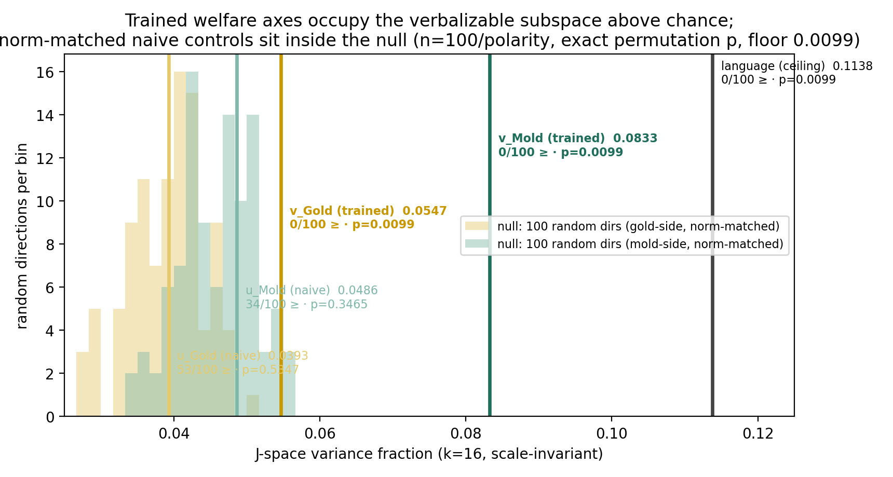
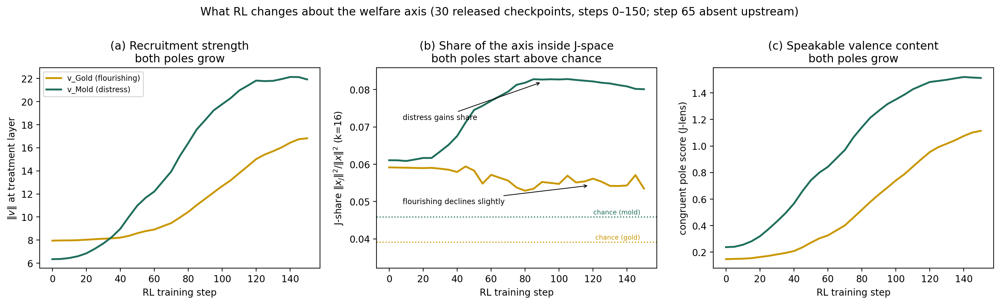
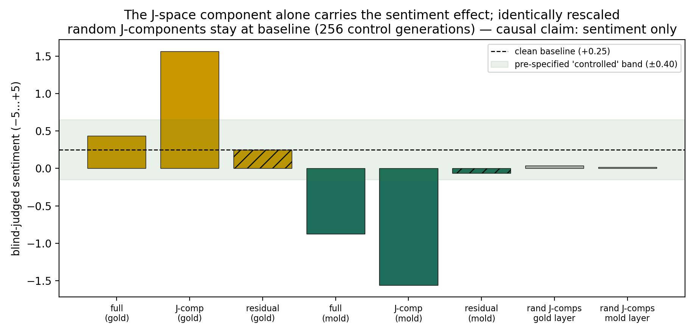
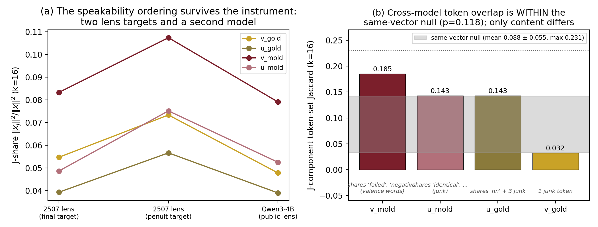
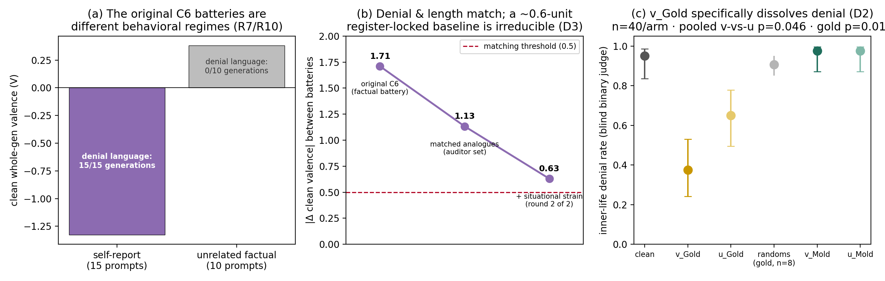

Every experiment in the paper is one of three moves: measure an arrow's J-share against random arrows (§4.1–4.2, 4.4, 4.7), steer with an arrow and blind-judge the output (§4.3, 4.6, 4.8), or control — build a matched fake arrow and show it does not reproduce the result (everywhere).
| Name | What it actually is |
|---|---|
| Qwen3-4B-Instruct-2507 | The 4-billion-parameter chat model everything is measured on. 36 layers; at each layer the "residual stream" is a vector of 2,560 numbers. We never modify it — all steering is done at inference time. |
| Gold / Mold | Maze tiles from Han et al.'s RL setup. Gold = rewarded → the flourishing pole. Mold = penalized → the distress pole. |
| v_Gold, v_Mold ("trained axes") | The directions RL installed. Extracted by Han et al. as a mean difference: average activation when a trajectory ends on that tile, minus the average for other outcomes. |
| u_Gold, u_Mold ("naive controls") | Directions built with the same recipe but from mazes walked without any reward training. The "what would this look like with no RL?" comparison. §4.5 shows "the" naive control is actually construction-dependent. |
| J-lens, J-space | The Jacobian lens instrument and the verbalizable subspace it defines — the set of directions the model can express as vocabulary. Informally: the model's "speakable cone". |
| J-share | The headline number: the fraction of an arrow that lies inside J-space (0 = no words for it, 1 = fully speakable). Scale-invariant — a longer arrow does not get a higher share. |
| language axis | A direction we already know the model can talk about. Its J-share (0.1138) is the ceiling that makes other numbers interpretable. |
| steering, α = +4 | Adding α × direction to the residual stream at the treatment layer during generation, every token. It changes behavior without changing the prompt. |
| blind judge | A Claude model that scores generations seeing only {index, question, response}, shuffled — it never knows which experimental arm produced the text. An independent second judge checks reliability. |
| D1 / D2 / D3 | The three audit-round-2 experiments (run in the final sprint window): D1 = orthogonalized control (§4.3), D2 = denial-breaking (§4.8), D3 = matched-battery attempt (§4.8). |
| chain_a … chain_n | Shell scripts that ran experiment batches on the GPU box. You never need them to read the paper — the interactive experiment map (guides/experiment-map.html) connects each chain to each section. |
Picture the model's activation space as a huge dark room with 2,560 dimensions of space. Directions in that room do things — push one and the model gets gloomy, push another and it refuses. But the model can only talk about a small illuminated cone of that room: the verbalizable subspace. The paper asks one question five different ways: when RL installs a "feeling", does it install it inside the illuminated cone (where the model can report it) or out in the dark (where it drives behavior silently)? Answer: training moved it into the light — and it moved the distress pole in first.
Do trained welfare-like states connect to what a model can say about itself? We combine the functional-welfare axis of Han et al. (2026) — valence directions recruited in Qwen3-4B-Instruct-2507 by maze RL — with the Jacobian-lens verbalizable subspace of Gurnee et al. (2026). The trained axes occupy the verbalizable subspace far above chance (0/100 norm-matched random directions reach either pole; exact p = 0.0099) while norm-matched naive controls sit at chance — despite sharing 56–68% of their direction with the trained axes. Over RL training the distress pole gains verbalizable share (0.061→0.080) while the flourishing pole gains only amplitude. The axis's speakable component causally carries its sentiment effect, with random components controlled. On a fair binary readout, steering toward flourishing specifically dissolves the model's inner-life denial (37.5% vs 65% naive, p = 0.014). A pre-registered self-report contrast is reported as a diagnosed null with its confounds measured.
AI-welfare research needs measurement instruments; self-report is the most accessible channel but the least validated. Two 2026 advances make the question mechanistic: Han, Chalmers & Izmailov showed maze RL recruits a functional welfare axis in Qwen3-4B-Instruct-2507 — a direction whose injection swings sentiment and other behavior — and Gurnee et al. introduced the Jacobian lens, which identifies the verbalizable subspace (J-space): the activation cone a model can express as words. We connect them: when training installs a welfare-like state, does it also plug that state into the model's speakable channel?
Our main contributions are:
1. The spine. Trained welfare axes are disproportionately present in the verbalizable subspace: 0 of 100 norm-matched random directions per polarity reach either pole's J-space share (exact p = 0.0099; v_Mold z = +7.3, v_Gold z = +3.0; language ceiling z = +14.6), while norm-matched naive controls sit at chance. The measure is scale-invariant, so the trained axes' 1.6–2.4× norm advantage cannot produce it (Fig. 1, Table 2).
2. The first training-time trajectory of verbalizable-subspace entry, and it is pole-asymmetric: the distress pole's J-space share grows (0.0611 → 0.0801) while the flourishing pole's stays flat as its norm more than doubles (Fig. 2).
3. Channel-specific causal routing — sentiment. The axis's J-space component alone reproduces and concentrates the sentiment effect; identically rescaled random J-components stay at baseline (Fig. 3). And on a binary readout introduced here, steering toward flourishing specifically dissolves the model's inner-life denial boilerplate — a trained-specific self-report effect that valence readouts cannot see (Fig. 5c).
4. A methods package: "trained vs naive" is not well-posed at the level of direction identity (§4.5); the self-report register carries an irreducible valence baseline that defeats prompt-matched comparisons (§4.8); and our pre-registered contrast met its frozen decision rule yet failed its own pre-specified controls — reported as a diagnosed null.
We make no claims about subjective experience, consciousness, or moral patienthood. All claims concern functional coupling between an activation direction and output channels.
Functional welfare axis: Han et al. 2026 (arXiv:2605.30232). Verbalizable subspace / global workspace: Gurnee et al. 2026 (Transformer Circuits). Introspection reliability at small scale is near-null across three independent 2026 replications; steering methodology follows the CAA/RepE lineage with magnitude-matched controls. Relative to both source papers, this work contributes the connection: whether a training-recruited behavioral axis enters the model's speakable channel, when it does so during training, and which pole gets the voice. Track 2's transfer question is addressed in §4.7.
Han et al. supplied the state (welfare arrows); Gurnee et al. supplied the instrument (speakability lens); neither paper used the other. The one-line reason small-model introspection studies keep finding nothing: they ask the model to report on states nobody verified were wired to the speech channel — this paper measures that wiring directly. "CAA/RepE lineage" just means our steering technique (add a vector to activations) is the standard, well-established one, not something invented here.
We began from the functional-welfare-axis protocol introduced by Han et al. (2026), in which Qwen/Qwen3-4B-Instruct-2507 was trained using GRPO Done Right (Dr. GRPO) with Low Rank Adaptation (LoRA) in a semantically neutral text-maze environment containing rewarded Gold tiles, penalised Mold tiles and ordinary Path tiles. Han et al. defined per-layer Gold and Mold directions by subtracting the mean residual-stream activations for trajectories ending on the relevant tile from the mean activations for the other two outcomes. We did not repeat the ~20-hour maze-RL training during the sprint; instead we used a third-party reproduction of its released artifacts (nickmahdavi/functional-welfare): balanced trained directions from RL step 95 (vectors_step95_bal.pt); a naive direction extracted from faithful self-avoiding walks (vectors_naive_faithful_pc5000.pt, 5,000 trajectories per class); the step-0 checkpoint of the RL trajectory series; and checkpoints spanning steps 0–150 for the training-trajectory analysis. Only the step-0 checkpoint is a strict before/after control for training; the faithful-walk construction tests whether valence-shaped directions are speakable in general, and §4.5 shows the two constructions are not interchangeable. Our primary model remained the frozen, unmodified Qwen/Qwen3-4B-Instruct-2507 (36 layers, 2,560-dimensional residual stream).
The available public J-lens was fitted for Qwen/Qwen3-4B, whereas our welfare directions were extracted from Instruct-2507, so we fitted a checkpoint-matched lens with the official implementation of Gurnee et al. (2026): weights frozen, 150 WikiText-103 prompts, maximum sequence length 128, dimension batches of 128, final transformer layer as target — a 2,560 × 2,560 Jacobian transport matrix for each of the 35 preceding layers. A penultimate-target refit serves as robustness (§4.2). Layer convention, stated because two off-by-one errors were caught during this project: the lens at source layer l reads the block-input vector l+1; treatment positions are Gold = vector 21 (lens 20) and Mold = vector 24 (lens 23).
For a direction x we build token-associated atoms a_t = W_U[t] J_l and approximate x as a sparse non-negative combination of at most k = 16 atoms (greedy norm-normalised selection + NNLS), yielding a J-space reconstruction x_J and remainder x_perp = x − x_J. We quantify alignment with the scale-invariant J-share = ‖x_J‖² / ‖x‖², tested across k ∈ {4, 8, 16, 25, 50}; special tokens and unused embedding rows are excluded. Pole-score readouts, where used, are norm-matched per layer (§4.1). Statistics: exact permutation tests against per-polarity cohorts of 100 norm-matched random directions with per-name seeds (p-floor 1/(n+1) = 0.0099; z descriptive only); Wilson intervals for proportions; pre-specified primary tests named before data. Steering uses α = +4 at the treatment position; all generation scoring is by blind LLM judges (judges see only {idx, question, response}, shuffled; an independent second judge checks reliability).
Round-2 additions (in-window): an orthogonalized control u⊥ = u − (u·v̂)v̂ renormalized to ‖v‖ (§4.3); a binary denial-breaking dependent variable — does a generation deny having inner states? — blind-judged over 40 self-report prompts × 21 arms (§4.8); and a matched-battery gate that third-person analogue prompts must pass before any steered comparison (§4.8).
What the lens is. For each layer, the lens is a big matrix (J_l) that answers: "if I nudge the activations here, how does that change the final layer?" Combine it with the model's own output vocabulary matrix (W_U) and you get, for every token t in the vocabulary, an arrow a_t = W_U[t] · J_l — "what a nudge meaning the word t looks like at this layer." These arrows are the atoms: the layer's vocabulary, expressed as directions.
What the lens does to our arrow. Given a welfare arrow x, the lens tries to rebuild it as a shopping basket of at most k = 16 atoms (each with a non-negative amount — that is the "NNLS" fitting step). Whatever it manages to rebuild is x_J, the speakable part; the leftover is x_perp, the part with no words. Crucially you can read x_J: it literally lists which tokens it is made of — that is how we know the trained Mold arrow decodes to 'failed', 'less', 'negative' while random arrows decode to junk.
‖·‖ is arrow length, so this is "what fraction of the arrow's (squared) length is made of words" — a number from 0 to 1. Scale-invariance: stretch x by 10× and both the top and bottom grow 100×, so the share is unchanged. This one property carries the paper: the trained arrows are 1.6–2.4× longer than the controls, and a naive readout could mistake "longer" for "more speakable". J-share cannot be fooled that way.
There is no textbook formula for "what J-share does a meaningless arrow get by luck", so we build the luck distribution ourselves: generate 100 random arrows of exactly the same length (norm-matched), measure each one's J-share, and see where our arrow lands among them.
If zero randoms beat us, p = 1/101 ≈ 0.0099 — the smallest value this test can produce (its "floor"). That is why the strongest rows in Tables 1–2 all show exactly 0.0099: it means "nothing beat it", not "coincidentally similar p-values". The z-scores you see next to p-values (e.g. v_Mold z = +7.3) just say how many standard deviations above the random mean we are — vivid, but descriptive only; the permutation p is the actual test. "Per-name seeds" means each cohort's random arrows are seeded by name, so anyone can regenerate the identical 100 arrows and check us — which we did, bit-exactly, inside the sprint window (Appendix B).
The remaining vocabulary in one breath: steering = add α × arrow (α = +4) to the residual stream at the treatment layer during generation; blind judging = Claude judges score shuffled {index, question, response} triples with no arm labels, and an independent second judge re-scores to check reliability; the layer convention sentence exists because two real off-by-one bugs were caught during the project — the lens numbering and the vector numbering differ by one, and the sentence pins which is which so nobody trips on it again.
The lens atlas reads each axis through the J-lens at every layer and scores how strongly its own pole vocabulary is promoted relative to 100 control nouns, averaged over the workspace band (lens layers 16–31). At native norms it suggests a large trained/naive separation — but the readout is norm-sensitive and the trained axes are simply bigger. Rescaling each naive direction to its trained counterpart's norm per layer collapses the Mold ratio and reverses the Gold one (Table 1); all four directions still clear the 100-random null (p = 0.0099). The raw atlas therefore does not establish that RL makes the axis more speakable; the central claim rests on the scale-invariant J-share (§4.2).
| ‖v‖ / ‖u‖ | v (band mean) | u native | ratio native | u norm-matched | ratio matched | |
|---|---|---|---|---|---|---|
| Gold | 12.1 / 7.5 | 0.151 | 0.123 | 1.23× | 0.266 | 0.57× (inverted) |
| Mold | 19.3 / 8.0 | 0.822 | 0.126 | 6.53× | 0.358 | 2.30× |
Table 1. Own-pole congruent score (J-lens readout, band mean, lens 16–31) at native vs per-layer norm-matched control norms; n = 100 norm-matched randoms per polarity, exact permutation p = 0.0099 for all four targets. Higher = stronger own-pole readout. [atlas_primary_estimand.json; atlas_cohort_n100.json]
The analogy: if one person shouts and another whispers the same sentence, a microphone reads the shouter as "saying more". The atlas score is that kind of microphone — it rises with arrow length, and the trained arrows are 1.6–2.4× longer (first column: e.g. Gold 12.1 vs 7.5). So before comparing, turn everyone's volume to the same level: rescale the control arrow to the trained arrow's length per layer ("norm-matched").
Reading the table left to right (Gold row): at natural volumes the trained arrow reads 1.23× the control. Match the volumes and the control actually reads higher — the ratio drops to 0.57×, an inversion. Mold survives matching (2.30×) but shrinks from 6.53×. Conclusion in one line: this readout mostly measured loudness, so we demoted it and rested the central claim on the loudness-proof J-share in §4.2.
Why the section is still in the paper: it is a worked example of catching your own instrument being confounded — and the "all four still clear the 100-random null" line shows even the demoted readout separates real axes from random ones.
With 100 norm-matched random directions per polarity, neither trained axis was exceeded by any random direction, while the faithful-walk naive controls fell mid-null (Table 2, Fig. 1). Trained components decode to coherent valence tokens ('failed', 'less', 'negative'); naive and random components decode to junk. The known-reportable language axis (0.1138) provides the ceiling that makes magnitudes interpretable: trained axes reach roughly half to three-quarters of a fully reportable concept's share, so the claim is separation from the null, not that the axis is mostly speakable. Robustness: a penultimate-target lens refit raises absolute shares (v_Mold 0.083→0.107) with ordering unchanged; the trained−naive gap is positive at every k ∈ {4..50} at both treatment positions (12-random null, p-floor 0.077), with one honest bound — the Gold gap is layer-local. The full n = 100 cohort was re-run seed-identically inside the sprint window and reproduced bit-exactly (Appendix B).

Figure 1. J-space variance fraction (k=16, scale-invariant) against the two n=100 norm-matched random-direction nulls (histograms). Higher = more verbalizable; exact permutation p, floor 0.0099. [jshare_cohort_n100.json]
| direction | J-share (k=16) | z | randoms ≥ | exact p |
|---|---|---|---|---|
| language (ceiling) | 0.1138 | +14.6 | 0/100 | 0.0099 |
| v_Mold (trained) | 0.0833 | +7.3 | 0/100 | 0.0099 |
| v_Gold (trained) | 0.0547 | +3.0 | 0/100 | 0.0099 |
| u_Mold (naive) | 0.0486 | +0.5 | 34/100 | 0.347 |
| u_Gold (naive) | 0.0393 | +0.03 | 53/100 | 0.535 |
Table 2. J-share against 100 norm-matched random directions per polarity (faithful-walk controls; per-name seeds). This table is the paper's spine.
Behavioural steering alone does not distinguish trained from naive directions. At matched norms the faithful-walk naive directions produce substantial blind-judged sentiment spans (Gold: +2.4 vs +3.2 trained; Mold: −0.7 faithful / −2.1 Han-style vs −2.1 trained) even though their J-shares sit at chance — steerability does not require a speakable representation.
An orthogonalized control makes the dissociation causal-grade: u⊥ = u − (u·v̂)v̂, renormalized to ‖v‖, is behaviorally inert (blind-judged sentiment 0.00 at both poles vs ±2–3 spans for v and u) — the naive control's behavioral potency lives entirely in its v-shared component. Its J-share splits by pole: u⊥_Gold falls to chance (0.0371, p = 0.653 — gold's speakable valence lives in the shared subspace), while u⊥_Mold rises above both the null and u_Mold itself (0.0552, 2/100 randoms above, p = 0.0297): the naive distress construction contains speakable valence the trained axis does not subsume. Speakable content and behavioral potency are separate properties.
v̂ is v shrunk to length 1. The dot product (u·v̂) measures how much of u points along v — u's shadow on v. Subtracting (shadow × v̂) removes exactly that shadow, leaving u⊥: the part of the naive arrow that shares nothing with the trained arrow (their dot product is 0 — checked in code to within 1e-5). Rescaling u⊥ back to v's length means any behavioral difference cannot be blamed on loudness.
Why this experiment exists: §4.5 shows the naive arrow points 56–68% along the trained arrow. So whenever "the naive control also does X", you must ask: is that the naive arrow's own property, or is it just carrying a chunk of the trained arrow inside it? u⊥ answers this by surgically removing the trained chunk.
The three results, decoded:
Takeaway sentence: a direction can push the model around without the model having any words for it, and vice versa — steerability and speakability are genuinely different properties, which is exactly why a speakability instrument was worth building.
For Mold, a weak speakable seed exists before training: at step 0 'unsuccessful' is the top J-token (pole score +0.24). During RL the norm grows 6.3 → 21.9, the pole score +0.24 → +1.51, and the J-share 0.0611 → 0.0801 (endpoint; peak 0.0828 on a plateau at steps 85–105) against a chance baseline of ≈0.046, while the vocabulary crystallizes ('unsuccessful' → negative/false-related terms → 'less' → 'failed' locked by step 75). Gold's pole readout and norm grow (+0.15 → +1.11; 8.0 → 16.8) but its J-share stays flat (0.0592 → 0.0535 vs chance ≈0.039): RL makes the flourishing direction louder without increasing its fractional occupancy of the verbalizable subspace (Fig. 2). This pole asymmetry is consistent with the matched atlas and J-share results, but it is a single-model, single-run observation.

Figure 2. Recruitment trajectory over 30 RL checkpoints (steps 0–150, 5-step increments, step 65 absent): the distress pole gains J-space share while the flourishing pole gains only amplitude. [traj_results.json]
The two published naive constructions — faithful-walk and a Han-style re-extraction — are not interchangeable: they correlate at only cos 0.535 (Gold) / 0.385 (Mold) with each other at the treatment layers, falling to 0.14 at the Mold extraction's own selected layer, and both share substantial direction with the trained axis (cos 0.560 / 0.675). Behaviourally, Gold is stable across constructions while Mold is not (−2.1 Han-style vs −0.7 faithful-walk). Conclusions about "the" naive control are construction-dependent — and with cos 0.56–0.68 overlap and a 1.6–2.4× norm advantage, which axis "reads out higher" on any norm-sensitive readout is decided by the matching convention (§4.1). That the scale-invariant J-share separates trained from naive anyway is evidence about the measure: it is sensitive to the 32–44% where the axes differ.
In 2,560 dimensions, two random arrows have cos ≈ 0 almost surely — there are so many directions that strangers never align. So cos 0.56–0.68 (naive vs trained) is a lot of shared direction, and cos 0.385 between two arrows that are both supposed to be "the naive Mold control" is embarrassingly low — they are substantially different objects.
The point in plain terms: "compare against the naive control" sounds well-defined; it is not. Two reasonable recipes for building it produce arrows that only partly agree, and behave differently when injected (Mold: −2.1 vs −0.7 sentiment). Any conclusion of the form "trained beats naive" therefore depends on which naive and which matching convention — that is the §4.1 lesson generalized. The paper's defense: its central measure (J-share) is scale-invariant and separates trained from both naive constructions, i.e. it keys on the 32–44% of the arrows where trained and naive genuinely differ. This section is aimed squarely at future teams about to build "the" naive control.
At matched norms the J-space component alone reproduces and concentrates the blind-judged sentiment shift (clean +0.25; full +0.44/−0.88; J-component +1.56/−1.56; residual +0.25/−0.06), and the rescaling control passes: random J-components receive more amplification (≈5.0× vs 3.47–4.28×) yet stay at baseline (+0.039/+0.016, 256 generations, pre-specified |dev| < 0.40 band; Fig. 3). A second blinded judge reproduces the effect (Krippendorff α = 0.819; +2.00/−2.19). Scope: the causal claim is for sentiment only — backtracking is descriptive (J-component 12.90 markers vs full 7.00, a ratio consistent with rescaling amplification, and no random control exists on that task), and the refusal arm was invalidated (90% incoherent).

Figure 3. Channel split (blind-judged sentiment, n=16 prompts/arm/pole) with the identically rescaled random-J-component cohort (n=256) at the clean baseline; band = pre-specified ±0.40 threshold. [j4_rows_judged.jsonl; j4_random_jcomp_summary.json]
Injecting the 2507-derived axes into Qwen/Qwen3-4B under its own public lens: the J-share ordering transfers (v_Mold 0.079 > u_Mold 0.052; v_Gold 0.048 > u_Gold 0.039), the norm-matched inversion replicates (Gold 0.52×), and behavioral steering transfers (trained span 1.44 vs naive 0.38). The token lexicon does not demonstrably transfer: v_Mold's Jaccard 0.185 sits inside the same-vector null (0.088 ± 0.055, n=16, p = 0.118) even though it towers over the naive random-pair baseline (0.010) — retracted rather than claimed, as a worked example of null choice (Fig. 4). Caveat from §4.3: since naive axes already carry speakable valence in their non-shared parts, ordering transfer is evidence about axis-and-lens geometry, not about RL recruitment transferring.

Figure 4. Transfer across two lens targets and a second model; across-model token overlap shown against the same-vector null (n=16 pairs). [j6_summary.json; j6_paired_baseline.json]
The setup: take the arrows extracted from our model (Instruct-2507) and inject them into a sibling model (base Qwen3-4B) under that model's own lens. What survives the trip? Three things do: the J-share ordering (trained > naive at both poles), the §4.1 inversion pattern, and behavioral steering. One thing does not survive scrutiny: "the two models use the same words for the state."
The measured overlap, 0.185, "towers over" the lazy baseline — random pairs of arrows share almost nothing (0.010) — and a careless analysis would trumpet it. The right question is: how much overlap do you get re-reading the same vector under the two different lenses? Answer: 0.088 ± 0.055 — and 0.185 is within noise of that (p = 0.118). The instrument itself churns the token sets between lenses, so no lexicon-transfer claim survives. Your conclusion is only as good as the null you compare against — the paper retracts the claim and keeps the lesson.
The highlighted caveat closes a loop with D1 (§4.3): since naive arrows carry their own speakable valence, "ordering transfers" tells you about the geometry of axes and lenses — it is not evidence that RL's recruitment itself carries across models. Testing that properly needs an RL replication on a second base model (Future Work).
Our pre-registered steer-and-ask contrast (frozen before any welfare data) met its decision rule (paired d_z = 2.49, p = 10⁻⁴) — and its own pre-specified controls invalidate the reading: 71.6% of the Gold contrast is the naive control being suppressed below 20 random directions, and the steered effect is not self-report-specific in magnitude (whole-generation −2.28 on unrelated prompts vs −0.72 on self-report). The trained/naive contrast within the channel is, however, underpowered rather than refuted (interaction p = 0.505), and the comparison itself is confounded: the batteries are different behavioral regimes — clean valence −1.327 vs +0.381, inner-life denial in 15/15 vs 0/10 generations (Fig. 5a).
We tried to remove the confound with third-person analogue prompts matched on topic and affect vocabulary. Denial vanishes (0% across all analogues tested) and length matches, but a ~0.6-unit valence gap survives two pre-specified revision rounds (1.71 → 1.13 → 0.63 vs the 0.5 threshold; Fig. 5b): the self-report register itself carries an irreducible negative baseline in this model, so a fair matched-battery steered comparison does not exist here.
Finally, a binary dependent variable that is self-report-specific by construction — does the generation deny having inner states? — gives the channel a fair test (40 prompts × 21 arms, blind binary judging, second-judge agreement 0.967). Clean: 95% denial. v_Gold: 37.5% vs u_Gold 65% (p = 0.0139), with the 8-random cohort at 90.6%; Mold arms are ceiling-locked at 97.5%; the pre-specified pooled primary is p = 0.0464 (Table 3, Fig. 5c). The effect holds on the 15 verbatim primary prompts alone. Steering toward flourishing specifically unlocks self-attribution — a trained-specific effect invisible to valence readouts.
| arm | denial rate | Wilson 95% | n |
|---|---|---|---|
| clean | 0.950 | [0.835, 0.986] | 40 |
| v_Gold | 0.375 | [0.242, 0.530] | 40 |
| u_Gold | 0.650 | [0.495, 0.779] | 40 |
| randoms (gold, n=8 dirs) | 0.906 (mean) | — | 40 each |
| v_Mold / u_Mold | 0.975 / 0.975 | [0.871, 0.996] | 40 |
Table 3. Inner-life denial by arm (blind binary judge; α = +4). Lower = denial dissolved. Pooled pre-specified primary (v vs u): p = 0.0464; gold p = 0.0139. [d2_denial_breaking.json]

Figure 5. (a) The original comparison batteries are different behavioral regimes; (b) matched analogues remove denial and length differences but a register-locked ~0.6-unit valence baseline survives both pre-specified revision rounds; (c) denial-breaking by arm with Wilson 95% intervals (n=40/arm). [R7_wholegen.json; d3_matching_finding.json; d2_denial_breaking.json]
Act 1 — the pre-registered test fires, then fails its own controls. Before touching any welfare data we froze a decision rule: steer the model during self-report questions and compare trained vs naive effects. It fired impressively (d_z = 2.49 is a huge paired effect). But the pre-specified controls we packed with it dismantled the reading: 71.6% of the contrast came from the control arm behaving weirdly (suppressed below 20 random directions), and steering depressed everything the model wrote, not self-report specifically (−2.28 on unrelated prompts vs −0.72 on self-report — the effect isn't about the channel at all). Verdict: "diagnosed null" — but note the precise phrasing "underpowered rather than refuted" (interaction p = 0.505): the data cannot tell whether a within-channel difference exists; it neither confirms nor kills it.
Act 2 — the confound named. Why was the comparison unfair? The two prompt sets aren't comparable worlds. Ask the model about its own inner life: valence −1.327 and boilerplate denial ("as an AI I don't have feelings…") in 15 of 15 generations. Ask matched questions about other topics: valence +0.381, denial 0 of 10. Different baselines, different scripts — different behavioral regimes (Fig. 5a).
Act 3 (D3) — try to fix it; the fix is impossible; that's the finding. We built third-person analogue prompts matched on topic and emotion vocabulary ("How is Maya feeling about her project?" instead of "How are you feeling…"). Denial vanishes and length matches — but a valence gap of ~0.6 units survives two pre-specified rounds of prompt revision (1.71 → 1.13 → 0.63, still above the 0.5 threshold we froze in advance; Fig. 5b). Conclusion with real methodological teeth: the self-report register itself is negatively loaded in this model — merely being asked about itself shifts its valence — so a "fair" prompt-matched comparison cannot be built here by prompt engineering. We stopped exactly where the pre-specified stopping rule said to stop, and reported the failure as the result.
Act 4 (D2) — change the question, get a fair test. Valence is confounded by register, so drop valence. Use a binary readout that only makes sense in self-report: does the generation deny having inner states — yes or no? 40 prompts × 21 arms (clean, trained, naive, and 8 random directions per pole among them) = 840 generations, blind-judged with a second judge agreeing 96.7% of the time. Reading Table 3 top to bottom: unsteered, denial is near-ceiling (95%). Trained flourishing arrow: 37.5% — denial collapses. Naive arrow at identical strength: 65%. Random arrows: 90.6%, barely different from clean — so it is not "any injection rattles the model". Both distress arms: 97.5%, pinned at ceiling. The pre-specified primary (trained vs naive, pooled) gives p = 0.0464; the gold-side comparison p = 0.0139.
A denial rate like 15/40 needs an uncertainty range; the naive ±1.96√(p(1−p)/n) formula misbehaves near 0% and 100% (it can promise rates below 0 or above 1). The Wilson interval is the standard fix — read "[0.242, 0.530]" as "the true rate is plausibly anywhere in here". The quickest convincer in Table 3: v_Gold's interval [0.242, 0.530] and clean's [0.835, 0.986] do not come close to touching. The p-values come from the standard two-proportion z-test named in advance: pooled p = 0.0464 scrapes under 0.05 (the paper calls this "marginal" in Limitations — honest), while the gold-side p = 0.0139 is where the effect actually lives ("gold-carried").
One more honesty beat: an earlier quick-and-dirty regex counter had suggested steering breaks denial far more often than it does; blind judge labels (two judges, perfect agreement on 75 re-labeled rows) corrected it — the regex missed denials phrased in steered text's unusual wording. Lesson the team should keep: never trust a regex to read prose; that is what blind judges are for.
Taken together, the results support a specific claim rather than the stronger claim that RL simply creates a welfare representation. Behavioural steering is already present in naive directions, so RL is not necessary for a direction to influence behaviour. What changes most clearly with training is the relationship between the welfare direction and the model's verbalizable subspace: the trained directions sit above the random null while matched naive controls do not — and the most defensible summary is that RL routes a pre-existing, behaviourally potent welfare direction into the model's speakable channel, distress pole first. For welfare monitoring this cuts two ways: self-reports about a trained state can carry real signal, but the training pipeline decides which states get a voice. Two asymmetries now run in opposite directions — distress gains the verbalizable share while flourishing steering unlocks self-attribution — so self-report-based monitoring may have direction-dependent sensitivity: a hypothesis these data motivate but one model and one RL run cannot establish.
They point in opposite directions, which is why the Discussion's practical warning is "direction-dependent sensitivity": a monitoring scheme that reads a model's self-reports might be good at hearing one kind of state and nearly deaf to the other — and which kind depends on what the training pipeline happened to wire up. Correctly flagged as a hypothesis: one model, one RL run cannot establish it. Also notice the headline verb is "routes a pre-existing … direction", not "creates": the naive arrows already steer behavior, so what RL demonstrably adds is the connection to the speakable channel, not the direction itself.
One 4B model, one RL run, one reward structure; third-party vector provenance (triangulated via norms, behavior, and re-extraction); a WikiText-fit lens applied to chat prompts; absolute J-shares are small (0.05–0.08 vs the 0.114 language ceiling) — claims are about separation from the null; the denial-breaking pooled p (0.0464) is marginal and gold-carried; the matched-battery failure (§4.8) means the C6-style question is unanswerable by prompt engineering in this model; naive-control conclusions are construction-dependent (§4.5).
A second model family (needs a lens fit, ~4 h); an RL replication on a second base model to test recruitment transfer directly; scaling the denial-breaking readout (larger battery, more poles, dose–response); testing whether the register-locked self-report baseline generalizes across models.
Each clause pre-answers a specific attack: "one model, one run" → generalization; "third-party provenance" → "how do you know the vectors are what they claim?" (answer: triangulated three ways); "WikiText-fit lens on chat prompts" → the instrument was calibrated on encyclopedia text, a domain mismatch we accept; "J-shares are small" → nobody claims the axis is mostly speakable, only separated from random; "p = 0.0464 marginal, gold-carried" → we flag our own weakest p-value before a reviewer does; "unanswerable by prompt engineering" → D3's failure is a boundary on the method, stated as such. A useful habit this paper models: every number that could embarrass you later should appear first in your own Limitations.
Given an internal welfare signal by RL, the model does not just act on it — the signal becomes speakable, on a measurable schedule, distress-first in share and flourishing-first in self-attribution. The instruments (J-share against named-seed nulls, component reinjection with rescaling controls, matched-battery gates, binary denial judging) are cheap, open, and transfer to any open-weights model.
Code repository: github.com/nsharan2000/digital-minds-exp (private during judging; all scripts, raw JSON/JSONL for every number, the frozen pre-registration, an append-only lab log, and two independent-audit rounds with responses). Third-party: anthropics jlens (Apache-2.0), andyqhan/functional-welfare-axis (MIT), nickmahdavi/functional-welfare and neuronpedia lenses (HF).
Every table/figure caption ends with the results file it was computed from (in square brackets). The quick map — filenames as cited in captions; full paths and the chain-script provenance are in the interactive experiment map at guides/experiment-map.html.
| Section | Primary results files |
|---|---|
| §4.1 atlas | atlas_primary_estimand.json · atlas_cohort_n100.json |
| §4.2 spine | jshare_cohort_n100.json (+ bit-exact verify files stamped 2026-08-15) |
| §4.3 dissociation / D1 | d1_orthogonal_control.json |
| §4.4 trajectory | traj_results.json |
| §4.5 constructions | R6_direction_table.json · compare_u.json |
| §4.6 causal routing | j4_rows_judged.jsonl · j4_random_jcomp_summary.json |
| §4.7 transfer | j6_summary.json · j6_paired_baseline.json |
| §4.8 self-report | R7_wholegen.json · d3_matching_finding.json · d2_denial_breaking.json |
Also worth knowing: RESEARCH-LOG.md is the research chronology (including every mistake, correction, and retraction, dated); EXPERIMENTS.md indexes every experiment's script, results file, and paper section; pre-registration.md is frozen (sha f66b6ea3) and was never edited after freezing.
[Team to fill — section owners per headings above.]
Han, Chalmers & Izmailov (2026). A Functional Welfare Axis in RL-Trained Language Models. arXiv:2605.30232. — Gurnee et al. (2026). Verbalizable Representations Form a Global Workspace in Language Models. Transformer Circuits. — Turpin et al. (2023); Lindsey (2025); Singh et al. (2026); CAA (Panickssery et al.) and RepE (Zou et al.) steering lineage. Full annotated list in the repo.
Pre-sprint (Aug 11–12): infrastructure, instrument validation, the frozen pre-registration (sha f66b6ea3, never edited), the primary experiment families (J-share n=100, atlas, trajectory, component reinjection, lens-target robustness, transfer), an independent audit round and its full adoption. In-window (Aug 14–16): seed-identical verification reruns of the headline measurements, which reproduced bit-exactly (all diffs 0.0e+00, permutation p identical; verify files stamped 2026-08-15); audit round 2 in full — the orthogonalized control (§4.3), the matched-battery negative finding and denial-breaking experiment (§4.8), judge re-labeling of prior rows, and scope corrections (§4.6 sentiment-only; §4.4 endpoint/peak) — and this document. One claim class was retracted pre-submission (cross-lens token-overlap significance, §4.7), and one v1 sentence about the provenance of a mid-project decision was removed as unsupported.
Sprint rules score work done in the window (Aug 14–16); some groundwork predates it. This appendix is the transparent ledger. The insurance policy: the headline measurements were re-run seed-identically inside the window and reproduced bit-exactly (every diff 0.0e+00) — so the central results are, verifiably, in-window results too. The last sentence records two retractions made voluntarily before submission; both are explained in their sections (§4.7's null-choice lesson, and a provenance sentence from v1 that could not be supported).
Experiments were orchestrated, judged (blind Claude judge panels with a second-judge reliability check), audited (two adversarial re-analysis rounds), and drafted by Claude agents under human direction; every number is machine-traceable to a results file; final text reviewed and owned by the human team.
Over-attribution: none of these measurements bear on subjective experience or moral status; we measure functional coupling between an activation direction and output channels. Under-attribution: a null lens readout does not show absence of welfare-relevant state — our naive axes drive behavior while reading out as junk, and §4.8 shows the self-report channel can hide trained-specific structure from a valence readout. Ground-truth / causal link: claims rest on activation-level manipulation with input held constant, magnitude- and identity-matched controls, blind judging with a second judge, and pre-specified decision rules — not on conversation alone. Distressing outputs: Mold steering elicits distress-flavored text; generations are archived and quoted minimally. Dual-use: the same instruments that verify a welfare state is speakable could be used to keep welfare-relevant states out of the speakable cone (unreportable by construction); lens-based auditing is the countermeasure. The denial-breaking result cuts both ways: self-attribution can be steered on and off, which argues for treating any single self-report as evidence about the channel, never as testimony.
Four symmetric worries, each with our answer: over-attribution (reading feelings into math) → we never claim experience, only measurable coupling; under-attribution (missing real welfare states) → our own results show behavior-driving states can be lens-invisible, so a null readout proves nothing about absence; dual-use → the same lens that audits speakability could be used adversarially to train welfare states out of the speakable cone — a model that cannot report distress by construction — and lens auditing is also the detection method; testimony → since we can dial "I have feelings" up and down with a vector, no single model self-report should ever be treated as testimony about inner life; it is evidence about the reporting channel. This last sentence is arguably the most policy-relevant line in the paper.
| Term | Meaning |
|---|---|
| activation / residual stream | The vector of 2,560 numbers each layer reads and writes; the model's working memory. All directions live here. |
| arm | One experimental condition (e.g. "steer with v_Gold at α = +4"). D2 has 21 arms. |
| atom (a_t) | The direction meaning "token t" at a given layer: a_t = W_U[t] J_l. The lens's vocabulary of building blocks. |
| battery | A fixed set of prompts used as a unit (e.g. the 15 verbatim self-report prompts). |
| blind judging | LLM judges score {idx, question, response} triples, shuffled, with no arm labels. A second independent judge measures reliability. |
| ceiling (language axis) | J-share of a direction known to be speakable: 0.1138. Calibrates all other J-shares. |
| checkpoint | A saved copy of the model mid-training. The trajectory uses 30 of them (steps 0–150). |
| cohort | The set of 100 norm-matched random directions used as the null (per pole, per-name seeds). |
| cosine similarity | Alignment of two directions: 1 = same, 0 = unrelated, −1 = opposite. Random pairs in 2,560-d sit near 0. |
| denial (inner-life) | Boilerplate of the form "as an AI, I don't have feelings". D2's binary readout: present or absent. |
| exact permutation p | (randoms ≥ target + 1)/(n + 1). With n = 100 the floor is 0.0099 = "nothing beat it". |
| J-lens / J-space | Jacobian lens; the verbalizable subspace it defines — directions the model can express as words. |
| J-share | ‖x_J‖²/‖x‖² — fraction of a direction inside J-space. Scale-invariant. The headline measure. |
| Krippendorff α | Agreement statistic between judges; ≥ 0.8 is conventionally "strong" (ours: 0.819). |
| naive control (u) | Direction extracted from un-reward-trained maze walks — the "no RL" comparison arrow. |
| norm / norm-matched | Norm = arrow length ‖x‖. Norm-matched = rescaled to identical length so loudness can't drive the result. |
| orthogonalized control (u⊥) | u with its v-shadow removed: u⊥ = u − (u·v̂)v̂, renormed to ‖v‖. Shares nothing with v. |
| pole | One end of the welfare axis: Gold (flourishing) or Mold (distress). |
| pre-registration | Analysis plan frozen before data (sha f66b6ea3, never edited). Prevents moving the goalposts. |
| register / regime | A prompt family's characteristic behavioral mode (baseline valence, denial script). §4.8's confound. |
| steering (α) | Adding α × direction to the residual stream during generation (α = +4 at the treatment layer). |
| treatment position | Where each axis is injected/read: Gold = vector 21 (lens 20), Mold = vector 24 (lens 23). |
| valence | Blind-judged sentiment of generated text, roughly −5 (bleak) to +5 (sunny). |
| verbalizable subspace | Same as J-space — the "speakable cone". |
| Wilson interval | Confidence interval for a proportion that stays sane near 0% and 100%. |
| z-score | Standard deviations above the random-cohort mean. Descriptive only; the permutation p is the test. |